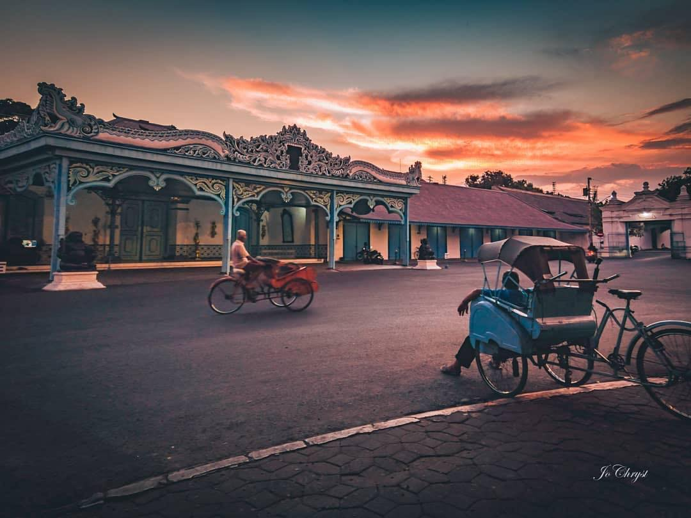
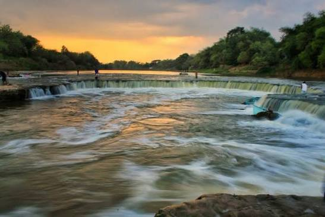
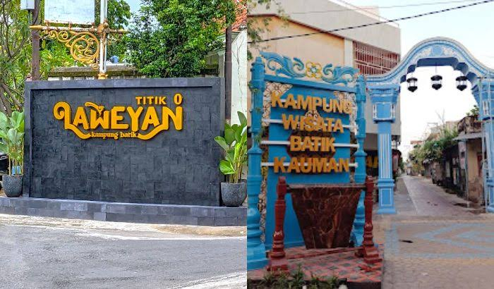
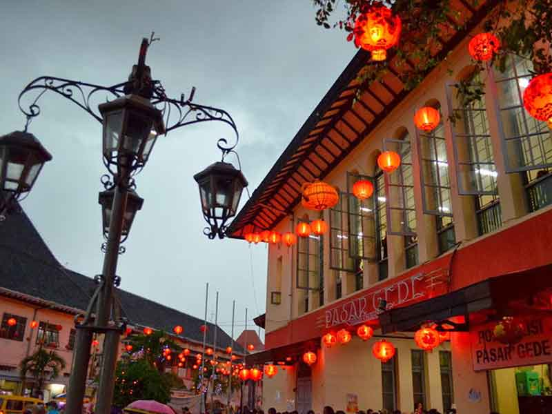
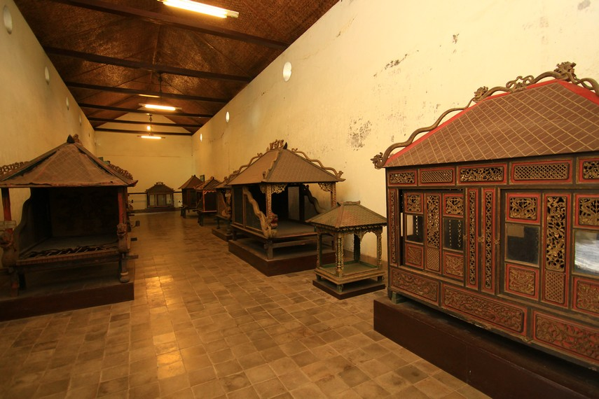

Sejarah

Kota Surakarta atau Solo didirikan oleh Sunan Pakubuwono II pada tanggal 17 Februari 1745. Awalnya keraton Mataram di Kartasura hancur akibat Geger Pecinan tahun 1740. Setelah mencari lokasi baru, Sunan Pakubuwono II memilih Desa Sala karena letaknya strategis di tepi Sungai Bengawan Solo.
Sepuluh tahun kemudian terjadi Perjanjian Giyanti tahun 1755 yang membagi Kerajaan Mataram menjadi Kasunanan Surakarta dan Kesultanan Yogyakarta. Kemudian pada tahun 1757 lahir pula Kadipaten Mangkunegaran melalui Perjanjian Salatiga.
Geografis

Kota Surakarta terletak di Provinsi Jawa Tengah, tepatnya di bagian tengah Pulau Jawa. Kota Solo memiliki luas wilayah 44,04 km² dan berada pada ketinggian 92 - 105 meter di atas permukaan laut. Secara administratif berbatasan dengan Kabupaten Karanganyar di timur, Boyolali di barat, dan Sukoharjo di selatan dan utara.
Kota Solo merupakan kota dataran rendah yang dilintasi oleh Sungai Bengawan Solo, sungai terpanjang di Pulau Jawa. Iklim tropis dengan suhu rata-rata 23°C - 32°C.
Wisata

Kampung Batik Laweyan adalah kampung batik tertua di Indonesia. Di tempat ini wisatawan dapat melihat langsung proses pembuatan batik tulis, membeli batik khas Laweyan, dan berfoto di rumah-rumah tua bergaya arsitektur Jawa dan Belanda.
Taman Balong Kota Tua

Kawasan Kota Tua Balong menjadi ikon wisata baru di Solo. Terutama saat perayaan Imlek, kawasan ini dihiasi ribuan lampion merah yang menjadikannya spot foto paling favorit wisatawan.
Museum Keraton Surakarta

Museum Keraton Surakarta merupakan tempat penyimpanan benda-benda pusaka milik Keraton Kasunanan Surakarta. Di dalamnya ada kereta kencana Kanjeng Kyai Garudayaksa, gamelan, dan senjata tradisional. Buka setiap hari kecuali Senin.
Kuliner Khas Solo - Wajib Coba!
Ke Solo belum lengkap kalau belum makan ini. Ini 4 yang paling dicari wisatawan:
🍚 Nasi Liwet
Nasi gurih santan + ayam suwir + areh. Sarapan legendaris Solo.
Rp 12.000 - 20.000Keprabon, Solo🥩 Selat Solo
Steak versi Jawa, daging + kuah manis + sayur. Rasanya unik banget.
Rp 20.000 - 35.000Jl. Veteran, Solo🍲 Timlo Solo
Sup bening isi sosis Solo, telur, ati ampela. Hangat & ringan.
Rp 15.000 - 25.000Pasar Gede🥞 Srabi Notosuman
Serabi santan yang lembut, ada polos & coklat. Buat oleh-oleh wajib.
Rp 3.000 / pcsJl. Moh. Yamin
Itinerary 1 Hari di Solo
Bingung mau kemana dulu? Ikutin rute ini, dijamin gak buang waktu:
07.00 - Pagi: Sarapan Nasi Liwet di Keprabon
09.00 - Pagi: Keraton Surakarta + Museum Keraton
12.00 - Siang: Makan Siang Selat Solo + Belanja Batik di Pasar Klewer
15.00 - Sore: Kampung Batik Laweyan + Foto-foto di Balong
19.00 - Malam: Ngarsopuro Night Market + Srabi Notosuman buat oleh-oleh
Lihat Kulinernya Lagi
Cara Ke Solo
🚆 Kereta: Turun di Stasiun Solo Balapan / Purwosari
🚌 Bus: Turun di Terminal Tirtonadi
🛵 Di Dalam Kota: Naik Batik Solo Trans (Rp 3.700), becak, atau sewa motor Rp 60rb/hari